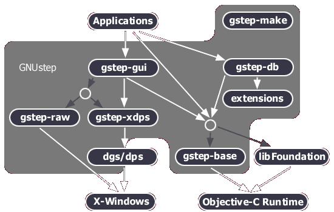

 |
This map gives a visual description of how the various GNUstep libraries work together. Libraries inside the grey area are actual GNUstep libraries. Other libraries are not, either because of copyright problems or because they do not fall into the scope of GNUstep.
Read the Developer documentation for more information on the libraries.